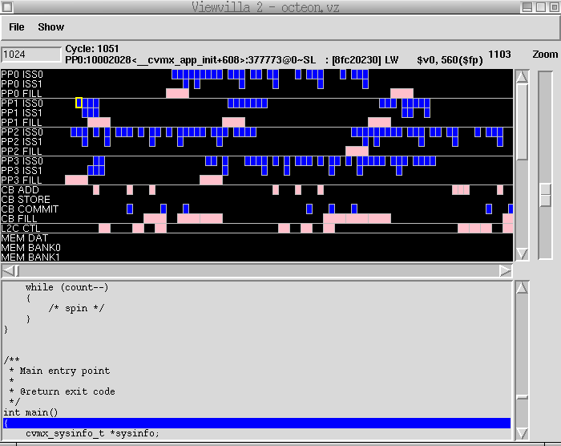

Performance profiling of the OCTEON processor cores and support hardware can help the application programmer to optimize for OCTEON. Cavium Inc. provides the tool Viewzilla to help the programmer to gather and visualize this profiling data.
This document provides detailed information on the following aspects of Viewzilla:
- Visual representation of each processor's pipeline
- Detailed load for each processor's crypto engine (-modes=cryptovz for the simulator)
- Level 1 and Level 2 cache operations
- Coherent bus utilization
- Low latency memory bandwidth utilization
- C Source display
- Instruction tracing per processor or all processors
- Fast searching
- Loop visualization with instruction stepping
- Quickly scale view from high level overview down to individual instructions
Viewzilla requires an OCTEON vz file and can optionally use debugging information from ELF executables. The basic viewzilla command line syntax is:
$ viewzilla octeon.vz [elf] [elf] ...
- octeon.vz
- Viewzilla file to load. Generated by the oct-sim option -vz. The option -modes=cryptovz can also be used to detail the crypto units.
- [elf]
- Optional Mips ELF files to load debugging information from
Applications should be build with DWARF debugging information (-g compiler option).
Below is a sample of the viewzilla interface showing the output of the passthrough example.

Here are the functions of the screen elements:
- Pull down menus
- File - Find can be used to find arbitrary strings in the viewzilla file. Searching starts at the current cycle and continues forward through time. Searches are case sensitive. Short cut keys: Control-F, /
- File - Find Next continues the previous find. Short cut keys: Control-G, n
- File - Quit exits the viewzilla program.
- Show - Source uses the DWARF debugging information from the ELF files to show the original program source.
- Show - Processor Instructions displays the instruction trace annotated by source for the current selected processor.
- Show - All Processor Instructions displays the instruction traces annotated by source for all the running processors.
- Show - Highlight Next moves the highlight to the next active cycle for the selected hardware unit. Short cut keys: ->, k
- Show - Highlight Previous moves the highlight to the previous active cycle for the selected hardware unit. Short cut keys: <-, j
- Show - Hardware controls whether each hardware unit is displayed.
- Start cycle input field
- This is the first clock cycle displayed at the left edge of the cycle view window. This value may be modified by directly typing a value, scrolling the horizontal scrollbar, or through one of the searching operations.
- Selected box description
- Whenever the mouse moves over an active cycle this shows a short description of what is occurring.
- Ending cycle
- This is the last cycle visible in the cycle view window. It is calculated based on the current zoom level and window width.
- Cycle view window
- This window display each hardware unit (vertically axis) and its state at each cycle (horizontal axis). Moving the mouse over boxes will show a short description. Clicking on a box will select it, any boxes associated with it, and display source/instructions as available. You can step to the next / previous selection using the left and right arrow keys.
- Vertical scrollbar for the cycle view window
- If the viewzilla window is too small, not all hardware units can be display in the cycle view window. Use this scrollbar to control which one are available.
- Zoom level slider
- Use this slider to control how much information is displayed. Sliding it up shows fewer cycles, but more detail. Sliding it down provides more cycles, but less detail.
- Horizontal scrollbar for the cycle view window
- Use this scrollbar to quickly move to any cycle in the viewzilla trace. The left and right arrows move one cycle at a time. Click paging moves 3/4 of the view area at a time.
- Source / Instruction display window
- Depending on the selection in the Show pulldown this will either display the source file for the current instruction or an instruction trace with source annotation. Note: This is only available when an instruction is selected.
- Vertical scrollbar for the source window
- Use this to scroll through the loaded source file or instruction trace.
When you click on a processor instruction, you will see text detailing the state of the processor at execution time. Here are some examples and how to decode them:
PP0:20001254<main+116>:2400@0~MisP : [24a50001] ADDIU $a1, $a1, 1 [$a1=2]
- PP0
- 20001254<main+116>
- The instruction virtual address (hex + label)
- 2400@0
- Cycle 2400, issued on pipe 0
- ~MisP
- The instruction was delayed due to a branch mispredict
- 24a50001
- ADDIU $a1, $a1, 1
PP0:20001264<main+132>:7302@0~DWB : [dfbf0000] LD $ra, 0($sp) [$ra=20000264(7FFFFFD0,7FFFFFD0)]
- ~DWB
- This load missed and matched a pending write buffer
- (7FFFFFD0,7FFFFFD0)
- (virtual address,physical address) in hex
- $ra=20000264
- 0x20000264 was loaded from physical address 0x7FFFFFD0
PP0:200004EC<flush_print+ 36>:7383@0~SL : [ffb00000] SD $s0, 0($sp) [(7FFFFFD0,7FFFFFD0)=0]
- ~SL
- The instruction was delayed because it had to issue on pipe 0
- (7FFFFFD0,7FFFFFD0)
- (virtual address,physical address) in hex
- =0
- The value 0 was written to physical address 0x7FFFFFD0
List of stall reasons:
- ~ITLB = Instruction TLB miss
- ~BR = Prior branch instruction
- ~JR = Prior jump instruction
- ~MisP = Prior branch mispredicted
- ~MTCOP0 = Prior MT COP0 instruction
- ~IF = Instruction fetch
- ~SL = Needs pipe 0, but pipe 1 is available
- ~BRF = Ignore this
- ~RAW = Input register values not available
- ~MisJR = Mispredicted jump
- ~WAI = WAIT instruction
- ~MUL = Multiplier busy
- ~CR = Crypto busy
- ~LLM = LLM busy
- ~D = Dcache miss that does not hit a write buffer entry
- ~DWB = Dcache miss that does hit a write buffer entry
- ~SY = SYNC/SYNCS/SYNCIOBDMA instruction
- Generate the viewzilla input file with the -vz option to oct-sim.
- Instruction tracing is already contained in the viewzilla file. Use -quiet with oct-sim to suppress tracing.
- Most of the time you are only interested in application performance. Use the option -wait=main to skip all analysis before the main entry point of the program. Without this option, it can be difficult to wade through all the output for the bootloader and C library startup.
- The simulator runs much slower with viewzilla output turned on. Use the -wait option to only start output in the area you are interested in.
- Viewzilla output files can get large very quickly. Make sure you have lots of free disk space. As an example, booting 16 cores and running for 10 million cycles generates a 14GB output file.
- Compile applications with debugging symbols (-g)
- Viewzilla uses the full pathnames present in the DWARF debugging information. Make sure source code can be found at these locations. If source view is unable to find a file it will show the path it tried.
- Due to the large amount of data, searching through a viewzilla trace can be slow. Avoid long searches by scrolling to the approximate cycle where your search can be found.
The vz-cut utility is provided to easily copy a section out of a viewzilla file into a smaller file. The input file is not modified.
$ vz-cut --start start_cycle --end end_cycle [--filename input_filename] [--outfilename output_filename] [--help]
- --start: the cycle to start copying from
- --end: the cycle to end copying on
- --filename: input filename, defaults to 'octeon.vz' if not provided
- --outfilename: output filename, defaults to 'octeon-cut.vz' if not provided
- --help: displays help message.
- Note:
- Only one of start or end is required, as start defaults to 0 and end defaults to the end of the file if the other is not provided.